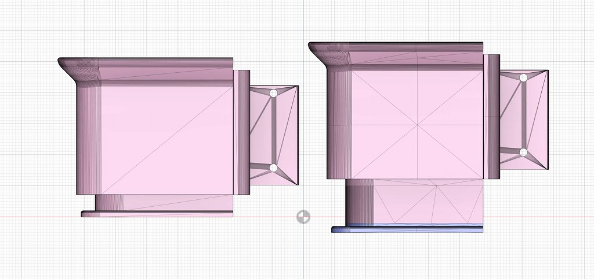

3Dプリントのためのモデル修正
概要
STL ファイルを Fusion360 にインポート・加工してエクスポートする手順について
はじめに
3Dプリンタでモデルを印刷する際に部分的に大きさを変えたいことがあります。例えば、ねじ穴の間隔を維持したまま高さを高くしたい場合にはスライサーの拡大縮小機能では対応できません。この場合、モデルデータを修正するのが早いので Fusion360 を使って修正する方法を以下に記します。
修正前後イメージ

オリジナルデータ: https://www.printables.com/model/680320-defiled-k1-max-riser-with-filament-relocator
手順(高さを高くする例)
- メッシュ -> 挿入 -> メッシュの挿入 でSTLファイルをインポート
- メッシュ -> 修正 -> 平面切断 を2回行って(切断面はXY平面、X距離で切断する高さを指定)伸ばすボディと伸ばさないボディに分割
- メッシュ -> 修正 -> メッシュを尺度指定 で伸ばすボディをZ方向のみ拡大
- 伸ばさない部分を移動してから メッシュ -> 修正 -> 結合 で結合
- 結合したボディをSTLでエクスポート
もちろん切断面・拡大方向を変更すれば高さではなく幅や奥行きの修正にも対応可能です。